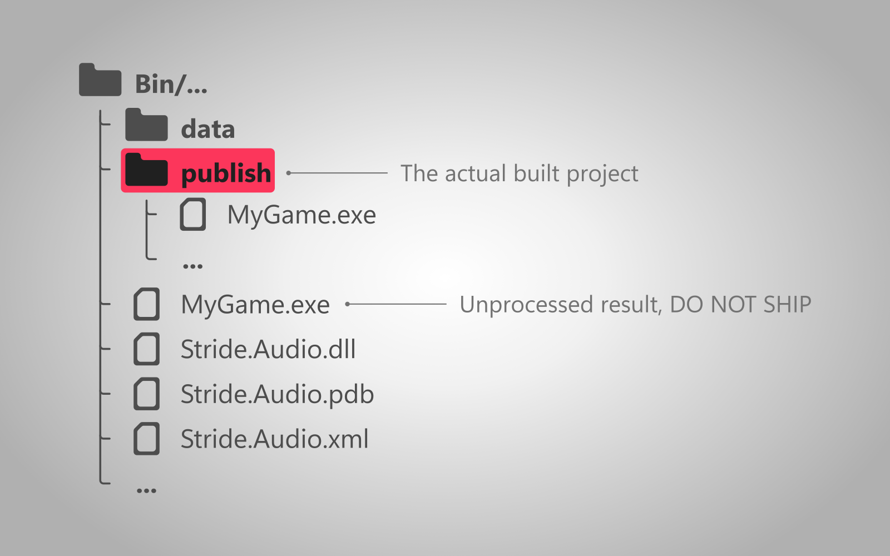

Build file structure
Intermediate
This page explains the file structure of a built Stride game.
Overview
By default, all builds are located in the Bin directory. It contains multiple sub-directories that categorize builds based on their configuration and platform.
When building the Release version of the game, the actual published files aren't located in the standard directory, but in it's subdirectory called publish.

Note
The build location can be configured. For more information visit the setup page.
Contents of the build folder
Note
Depending on your setup, some of these files might not be generated.
The build folder contains the following files:
- MyGame.PlatformName - the executable. It's file extension depends on the platform (e.g.
.exeon Windows). - data - folder containing asset bundles.
.dlland.sofiles - libraries used by the game. They can be embedded in the executable itself, in order to declutter the folder..jsonfiles - contain information needed to launch the game. Depending on the configuration, they might not be needed and won't be generated.
Additionally, there are also these files, that don't need to be included with the game.
- createdump.exe - application for capturing information about a crash.
.pdbfiles - they contain debug information, used for attaching a debugger (using breakpoints), creating more detailed logs or helping players make mods more easily. For more information, read the Microsoft article..xmlfiles - they contain generated documentation for every package in your project. For more information, read the Microsoft article.